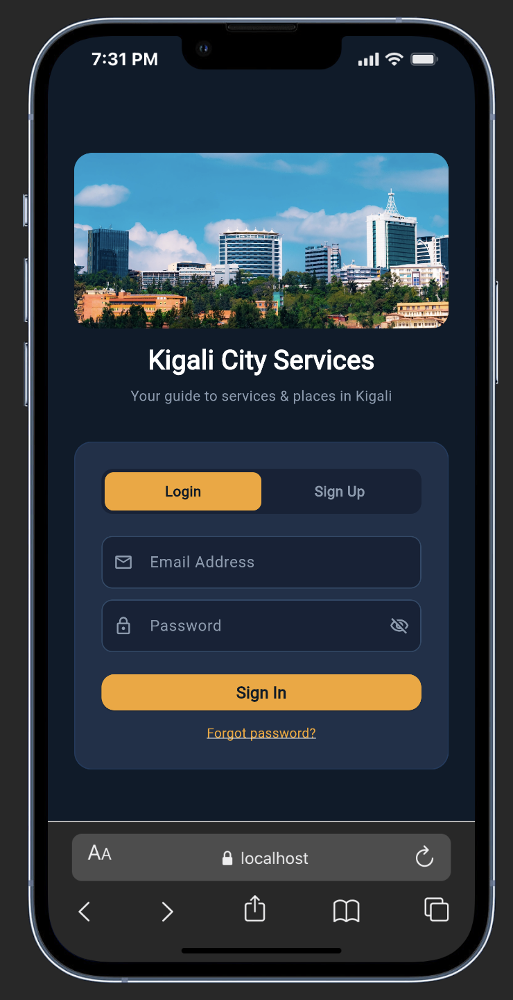
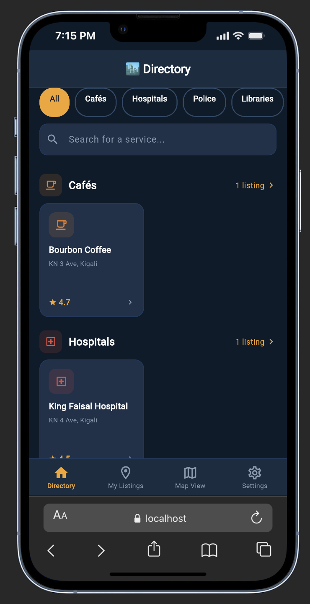
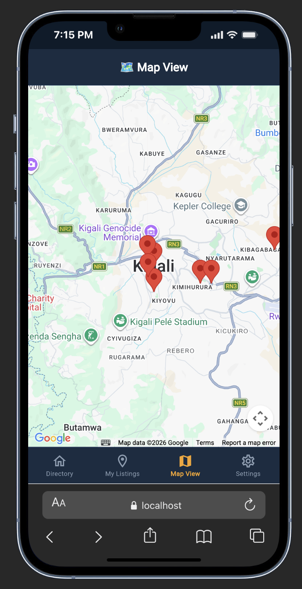
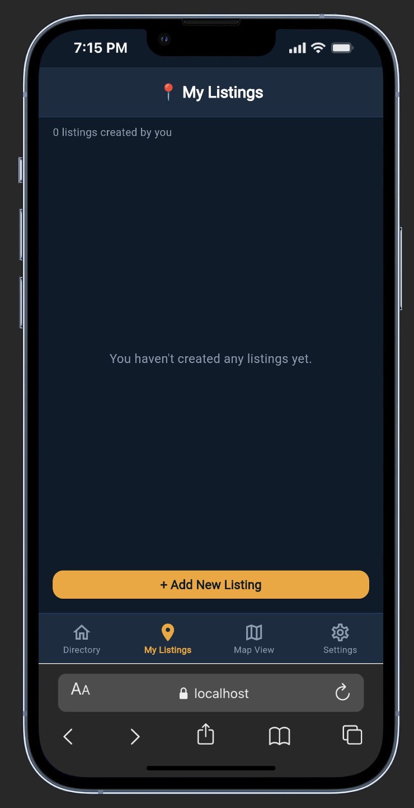

Your pocket guide to finding hospitals, restaurants, parks, police stations, libraries, cafés, and tourist attractions anywhere in Kigali — with live maps and turn-by-turn directions.
Kigali Services Directory is a free mobile app designed to make life in Kigali easier. Whether you are a long-time resident or a visitor, the app puts every essential service and popular destination on your phone — searchable, filterable, and always up to date.
Type any name or address and see matching places appear in real time as you type.
Every listing is pinned on an interactive map so you can see exactly where things are relative to each other.
One tap opens Google Maps or Apple Maps with step-by-step directions straight to your destination.
Bookmark any place with a single tap so it is always a click away when you need it next.
Know a great spot that is not listed yet? Add it yourself and share it with the community.
Share your experience or read what others say before visiting a place for the first time.
Here is what you will see when you open Kigali Services Directory on your phone.

Create a free account with your email address. A quick verification step keeps the community safe — once confirmed, you are in.

Browse all listings organised by category. Use the search bar at the top to narrow down results instantly, or tap a category chip to filter by type.

See every listing as a pin on an interactive city map. Tap any pin to see its name, then tap again to open the full details page.

Manage the places you have added. Edit the details or remove a listing at any time — your changes appear for everyone immediately.
Kigali Services Directory is designed to be simple and fast. Follow these steps to get the most out of it.
Open the app and tap Sign Up. Enter your name, email address, and a password. Check your inbox for a verification email and tap the link inside — this only takes a moment and keeps your account secure.
The Directory tab opens automatically after you sign in. Scroll through all available services and places, or tap one of the coloured category chips at the top to show only hospitals, cafés, parks, and so on.
Tap the search bar and start typing a name or address. Results update as you type — no need to press a search button. You can combine search and category filter at the same time.
Tap any card in the directory to see the full details: address, contact number, description, star rating, a mini map showing the exact location, and all reviews left by other users.
Inside a listing's detail page, tap the Get Directions button. The app will open Google Maps (or Apple Maps on iPhone) with a route already planned from your current location.
See the bookmark icon on any listing card or detail page? Tap it to save the place. Find all your saved spots in the Bookmarks section — they sync across your devices automatically.
Go to My Listings and tap the + button. Fill in the place name, category, address, and a short description. Once saved, it appears in the directory for all users straight away.
Visited a place listed in the app? Open its detail page, scroll to Reviews, and share your experience in a few words. Your review helps others in the Kigali community make better choices.
"All changes you make — new listings, bookmarks, and reviews — are saved to the cloud and update for every other user instantly. There is no need to refresh the app."
A quick reference to every feature available in Kigali Services Directory.
| Feature | What it does for you | Where to find it |
|---|---|---|
| Search | Find any place by name or address as you type | Directory tab |
| Category Filter | Show only hospitals, cafés, parks, etc. | Directory tab |
| Map View | See all places plotted on an interactive city map | Map tab |
| Get Directions | Opens navigation app with route to the selected place | Detail page |
| Bookmarks | Save and revisit your favourite places anytime | Bookmark icon |
| Reviews | Read others' experiences or share your own | Detail page |
| Add a Listing | Contribute a new place to the community directory | My Listings tab |
| Edit / Delete | Update or remove listings you have added | My Listings tab |
| User Profile | See your account information at a glance | Settings tab |
| Notifications Toggle | Choose whether to receive app notifications | Settings tab |
| Secure Sign-In | Email verification keeps your account protected | Login screen |
Kigali Services Directory was built to make it easier for Kigali residents and visitors to discover the essential services and interesting places that the city has to offer. Whether you have just moved to Kigali or simply want to explore a new neighbourhood, this app is your starting point.
Developed by Jongkuch Anyar as part of the Mobile Application
Development course.
j.anyar@alustudent.com